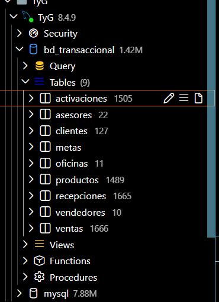
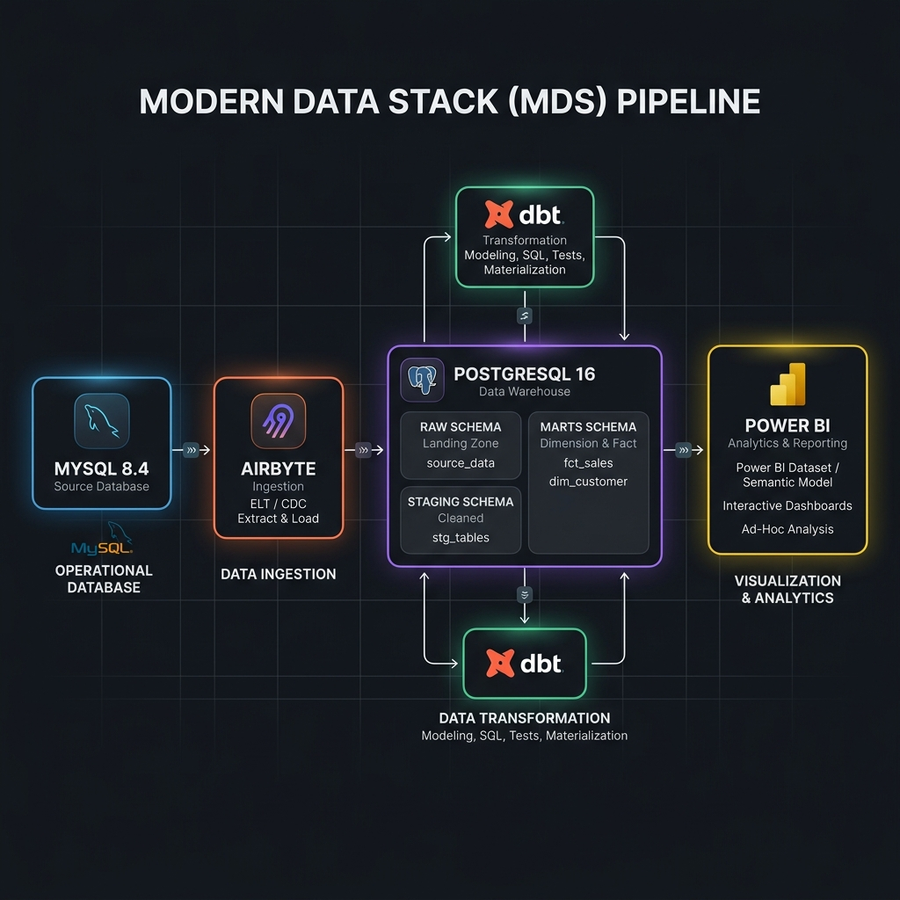
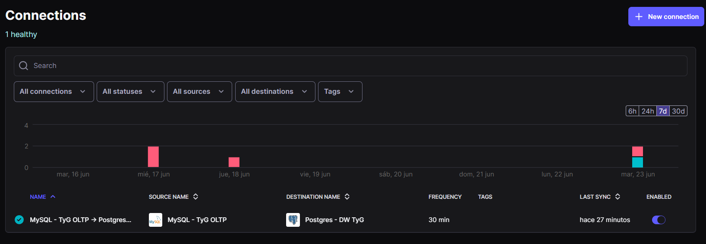
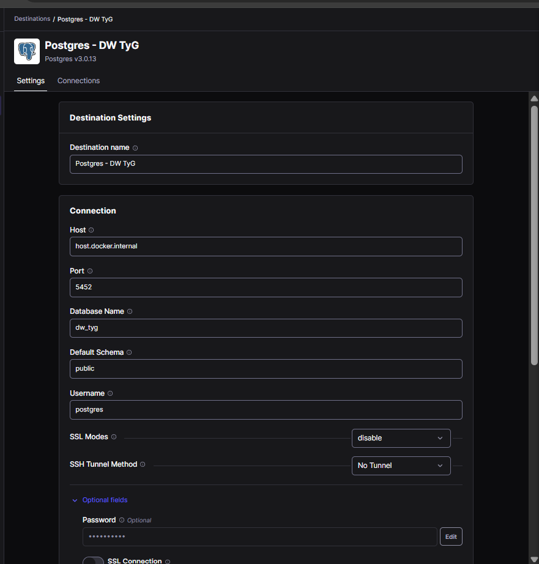
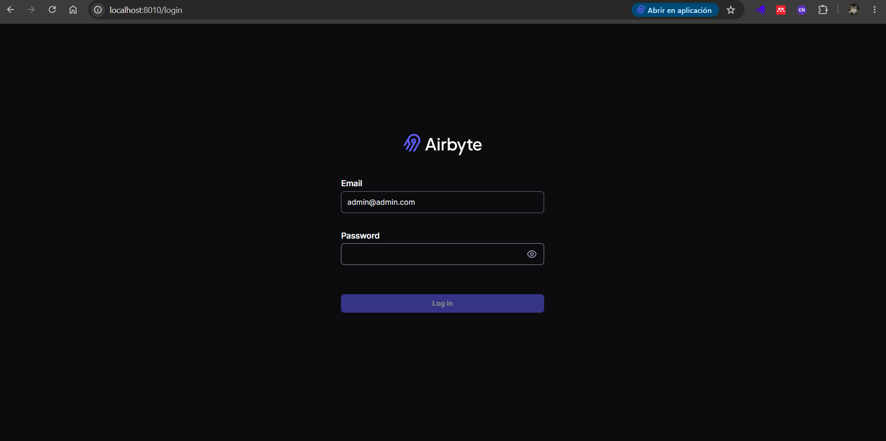
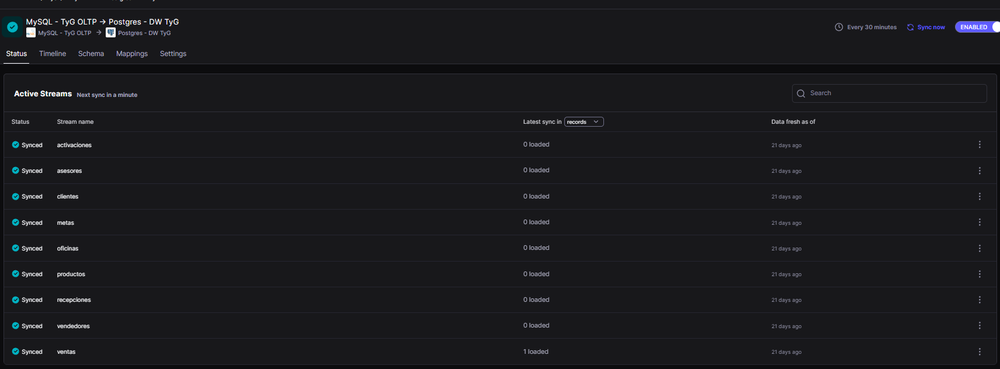
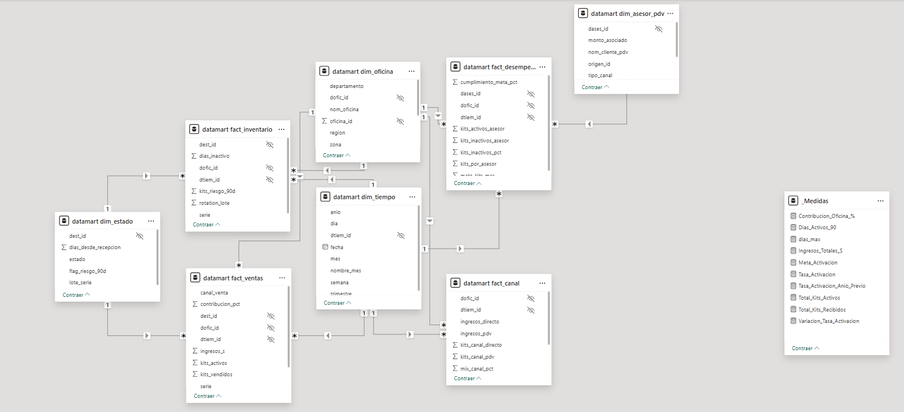
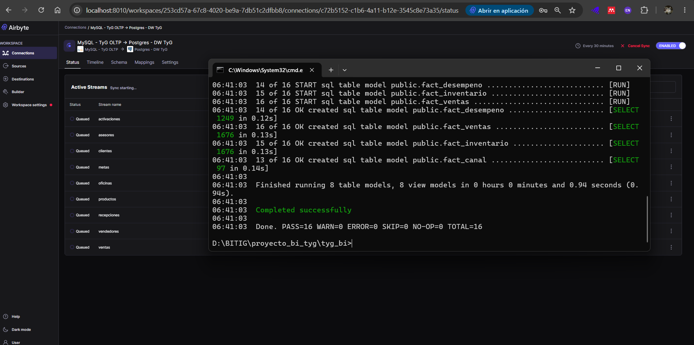

Guía de Creación del Proyecto
Esta guía técnica detalla la bitácora cronológica de ingeniería utilizada para construir desde cero el ecosistema analítico de Business Intelligence de T&D Angeles E.I.R.L. El documento está diseñado como un manual de referencia técnica para recrear toda la solución, abarcando desde la configuración del entorno hasta el modelado dimensional y la conexión con la capa de presentación en Power BI.
1. Configuración Inicial del Entorno y Directorios
El punto de partida del proyecto consistió en estructurar un repositorio local limpio y modular, aislando los entornos de documentación, transformación de datos e infraestructura física.
Estructura de Directorios del Repositorio
Se ejecutaron los siguientes comandos en el host para inicializar el árbol de carpetas base del proyecto:
# Crear la carpeta raíz del proyecto
mkdir tyg_bi
cd tyg_bi
# Crear subdirectorios del stack
mkdir docs # Documentación MkDocs
mkdir dbt_project # Modelado con dbt Core
mkdir docker-services # Archivos YAML y configuraciones de contenedores
Inicialización de Python y Entorno Virtual
Para evitar conflictos de librerías en la máquina local, se aprovisionó un entorno virtual de Python 3.11 para instalar los ejecutables y dependencias de dbt y MkDocs:
# Crear el entorno virtual en la carpeta raíz
python -m venv venv
# Activar el entorno virtual (Windows PowerShell)
.\venv\Scripts\Activate.ps1
# Actualizar el gestor de paquetes pip
python -m pip install --upgrade pip
# Instalar los paquetes necesarios del Modern Data Stack
pip install dbt-core dbt-postgres mkdocs-material
!!! success "Instalación Exitosa"
Puede comprobar las versiones instaladas en el entorno ejecutando dbt --version y mkdocs --version. Esto asegura que contamos con la infraestructura necesaria para compilar modelos y servir la documentación.
2. Configuración e Inicialización del Origen (MySQL OLTP)
El origen de datos (sistema transaccional) es una base de datos MySQL que registra el inventario y las ventas diarias. Para aislar este entorno, se desplegó un contenedor virtualizado mediante Docker.
Orquestación Multi-contenedor (docker-compose.yml)
En el directorio docker-services/, se creó el archivo de orquestación docker-compose.yml para instanciar el contenedor de MySQL expuesto en el puerto personalizado 23306:
version: '3.8'
services:
mysql-tyg-oltp:
image: mysql:8.4
container_name: mysql-tyg-oltp
restart: always
environment:
MYSQL_ROOT_PASSWORD: SecurePass123!
MYSQL_DATABASE: transactional_db
ports:
- "23306:3306"
volumes:
- ./mysql/my.cnf:/etc/mysql/conf.d/my.cnf
- ./mysql/data:/var/lib/mysql
- ./mysql/init:/docker-entrypoint-initdb.d
Configuración del Motor para CDC (my.cnf)
Para habilitar Change Data Capture (CDC), fue imperativo mapear un archivo de configuración de lectura obligatoria para el motor MySQL. Se guardó el archivo en ./mysql/my.cnf con los siguientes parámetros habilitadores:
[mysqld]
# Identificador único del servidor de base de datos en el cluster
server-id = 1
# Habilitación y nombre base del registro binario de transacciones
log_bin = mysql-bin
# Formato de registro binario estructurado por fila
binlog_format = ROW
# Captura el estado completo de la fila (obligatorio para Airbyte CDC)
binlog_row_image = FULL
# Retención mínima de logs binarios para evitar pérdida en caídas de red
binlog_expire_logs_seconds = 864000
!!! warning "Reinicio Obligatorio"
Cualquier modificación en el archivo my.cnf requiere la reconstrucción o reinicio del contenedor MySQL para que las variables del sistema se carguen en memoria.
Inicialización y Carga de Datos Transaccionales
Con la configuración binaria lista, se levantó el contenedor y se importó el archivo de respaldo transaccional (bd_transaccional.sql) para establecer el histórico inicial de 1,670 transacciones de kits prepago:
# Levantar el contenedor en segundo plano
docker compose up -d mysql-tyg-oltp
# Verificar logs de inicialización del motor
docker logs -f mysql-tyg-oltp
# Poblar la base de datos MySQL con el script del histórico
docker exec -i mysql-tyg-oltp mysql -u root -pSecurePass123! transactional_db < bd_transaccional.sql
Validación de Carga en MySQL
A continuación, se presenta la validación del estado físico de las tablas inicializadas en el origen transaccional:

3. Configuración del Data Warehouse (PostgreSQL)
Como repositorio de datos analíticos (Data Warehouse), se seleccionó un motor PostgreSQL 16 estructurado por esquemas, con el fin de organizar y segmentar los datos crudos, limpios y finalmente modelados.
Aprovisionamiento del contenedor Postgres
Se añadió la definición del servicio Postgres al archivo de orquestación docker-compose.yml bajo las siguientes especificaciones:
postgres-bi:
image: postgres:16
container_name: postgres-bi
restart: always
environment:
POSTGRES_DB: dw_tyg
POSTGRES_USER: bi_user
POSTGRES_PASSWORD: SecureDwPass456!
ports:
- "5452:5432"
volumes:
- ./postgres/data:/var/lib/postgresql/data
Se levantó el servicio ejecutando docker compose up -d postgres-bi.
Inicialización del Esquema y Permisos
Una vez activo el contenedor en el puerto 5452, se utilizó DBeaver para ejecutar el script SQL de creación de base de datos y esquemas para las distintas capas del Data Warehouse:
-- Conectado como superusuario a postgres:bi_user
CREATE DATABASE dw_tyg;
-- Conectarse a la nueva BD 'dw_tyg' y crear esquemas lógicos
CREATE SCHEMA airbyte_raw; -- Destino de ingesta cruda
CREATE SCHEMA staging; -- Capa intermedia de limpieza y normalización
CREATE SCHEMA marts; -- Capa final expuesta a Power BI (Esquema Estrella)
-- Asignación de permisos al rol de análisis
GRANT ALL PRIVILEGES ON SCHEMA airbyte_raw TO bi_user;
GRANT ALL PRIVILEGES ON SCHEMA staging TO bi_user;
GRANT ALL PRIVILEGES ON SCHEMA marts TO bi_user;
Diagrama de la Arquitectura Analítica
El flujo general de la información a través de los componentes físicos se ilustra en el siguiente diagrama de arquitectura:

4. Despliegue y Configuración de la Ingesta (Airbyte)
Airbyte Open Source gestiona la replicación incremental de datos del entorno transaccional al Data Warehouse sin interferir con la lógica de base de datos origen.
Instalación de la Plataforma Airbyte
Se clonó la versión oficial del orquestador open source de Airbyte e inició la plataforma local:
git clone https://github.com/airbytehq/airbyte.git
cd airbyte
./run-ab-platform.sh
Configuración en la Interfaz Web (http://localhost:8000)
-
Configuración del Source (MySQL):
- Seleccione el conector de MySQL.
- Defina el host de origen (
host.docker.internalpara alcanzar el puerto expuesto del host desde la red de contenedores). - Indique el puerto
23306(o3306si está dentro de la misma red virtual de Docker). - Ingrese credenciales seguras.
- Seleccione CDC como método de replicación, ingresando el usuario administrador con permisos para leer el
binlog.

-
Configuración del Destination (PostgreSQL):
- Seleccione el conector de PostgreSQL.
- Host:
host.docker.internal/ Puerto:5452(o5432de manera interna). - Base de datos:
dw_tyg. - Esquema por defecto:
airbyte_raw.

-
Configuración de la Conexión:
- Asocie el Source MySQL con el Destination Postgres.
- Estrategia de replicación para hechos (
ventas,recepciones): Se determinó configurar el modo Incremental | Append debido al volumen dinámico y crecimiento constante de las transacciones. Esto optimiza el consumo de red y disco. - Estrategia de replicación para dimensiones: Se configuró el modo Full Refresh | Overwrite para tablas catálogo relativamente estables (
vendedores,pdv,oficinas,metas), asegurando consistencia absoluta en el warehouse en cada sincronización.
Replicación y Panel de Conexiones
El panel de control muestra el estado general y la validación de las sincronizaciones completadas con éxito en el entorno local:


5. Desarrollo desde Cero del Proyecto dbt
Una vez cargados los datos crudos en airbyte_raw, se procedió al desarrollo estructurado de las transformaciones analíticas con dbt Core.
Inicialización del Proyecto
Dentro de la carpeta raíz tyg_bi/, se ejecutó el asistente para estructurar el proyecto:
dbt init tyg_bi_transform
postgres.
Configuración del perfil de conexión (profiles.yml)
Se configuró el archivo ~/.dbt/profiles.yml para permitir la comunicación segura entre dbt Core y la instancia analítica de PostgreSQL:
tyg_bi_transform:
outputs:
dev:
type: postgres
host: localhost
port: 5452
user: bi_user
password: SecureDwPass456!
dbname: dw_tyg
schema: staging
threads: 4
target: dev
Construcción del Modelo Modular por Capas
A. Capa Bronze / Raw (Declaración de Fuentes)
Se creó el manifiesto de fuentes en models/staging/sources.yml indicando a dbt dónde leer las tablas crudas generadas por Airbyte:
version: 2
sources:
- name: airbyte_raw
database: dw_tyg
schema: airbyte_raw
tables:
- name: ventas
- name: vendedores
- name: pdv
- name: oficinas
- name: metas
B. Capa Silver / Staging (Limpieza e Integración)
Se desarrollaron modelos de staging (stg_*.sql) para aplicar limpieza de datos, casteo de tipos, reemplazo de nulos mediante coalesce, expresiones regulares regexp_replace, y la eliminación crítica del efecto Fan-out en las series utilizando funciones de ventana:
-- Ejemplo en models/staging/stg_ventas.sql
with source_data as (
select * from {{ source('airbyte_raw', 'ventas') }}
),
deduplicated as (
select
coalesce(id_venta, 0) as id_venta,
coalesce(lote_serie, 'SIN_SERIE') as lote_serie,
coalesce(monto, 0.0) as monto_venta,
-- Estandarización de texto con regexp_replace
regexp_replace(upper(canal), '[^A-Z]', '') as canal_venta,
cast(fecha_venta as timestamp) as fecha_venta,
id_oficina,
id_vendedor,
-- ROW_NUMBER para eliminar duplicidad en el número de serie de kit
row_number() over (
partition by lote_serie
order by fecha_venta desc
) as row_num
from source_data
)
select
id_venta,
lote_serie,
monto_venta,
canal_venta,
fecha_venta,
id_oficina,
id_vendedor
from deduplicated
-- Filtro crítico para eliminar registros duplicados del histórico (Fan-out)
where row_num = 1
C. Capa Gold / Marts (Esquema Estrella)
En esta capa final, los datos se materializaron como tablas físicas en el esquema marts utilizando dimensiones conformadas y tablas de hechos para optimizar las uniones:
- Dimensiones (
dim_vendedores.sql,dim_oficinas.sql,dim_tiempo.sql): Catálogos limpios con llaves primarias únicas. - Tabla de Hechos (
fact_ventas.sql): Transacciones históricas enlazadas con llaves foráneas a las dimensiones.
-- Ejemplo en models/marts/fact_ventas.sql
{{ config(materialized='table', schema='marts') }}
select
v.id_venta,
v.lote_serie,
v.monto_venta,
v.canal_venta,
v.fecha_venta,
v.id_oficina,
v.id_vendedor
from {{ ref('stg_ventas') }} v
Estructura del Modelo Dimensional
El modelado en estrella resultante de las transformaciones de dbt y sus llaves primarias y foráneas se detallan a continuación:

Pruebas Estructurales y Validación
Para garantizar la integridad referencial y asegurar la calidad del dato, se definieron tests automáticos de dbt en el archivo models/marts/schema.yml:
version: 2
models:
- name: dim_vendedores
columns:
- name: id_vendedor
tests:
- unique
- not_null
- name: fact_ventas
columns:
- name: id_venta
tests:
- unique
- not_null
Se corrió el pipeline completo y los tests automáticos mediante:
dbt run
dbt test
Evidencia de Procesamiento y Validación
A continuación, se adjunta la captura que evidencia el paso correcto de todas las pruebas analíticas definidas:

6. Conexión del Modelo Semántico en Power BI
La fase final del proyecto involucró conectar la capa semántica de Power BI con las tablas modeladas de la capa Gold (marts) para habilitar la visualización interactiva.
Importación de Datos
- Abra Power BI Desktop.
- Seleccione Obtener Datos > Base de datos de PostgreSQL.
- Configure los parámetros de conexión:
- Servidor:
localhost:5452 - Base de datos:
dw_tyg - Modo de conectividad: Seleccione Import para cargar los datos en memoria y permitir cálculos DAX de alto rendimiento.
- Servidor:
- En el navegador, seleccione las tablas del esquema
marts(dim_vendedores,dim_oficinas,dim_tiempo,fact_ventas,fact_metas_pedidos).
Mapeo Relacional (Esquema en Estrella)
En la vista de modelo de Power BI, se relacionaron las tablas de hechos con las dimensiones conformadas en relaciones clásicas 1 a Varios (1:*) con filtro unidireccional para garantizar una jerarquía de filtrado limpia y evitar la ambigüedad:
dim_oficinas[id_oficina](1) ───> (*)fact_ventas[id_oficina]dim_vendedores[id_vendedor](1) ───> (*)fact_ventas[id_vendedor]dim_tiempo[fecha](1) ───> (*)fact_ventas[fecha_venta]
Creación de Medidas DAX Críticas
Se implementaron medidas de negocio explícitas para consolidar los KPIs analizados:
// Ingresos Monetarios Consolidados
Ingresos_Totales = SUM(fact_ventas[monto_venta])
// Tasa de Activación (%)
Tasa_Activacion_Kits =
DIVIDE(
CALCULATE(COUNT(fact_ventas[lote_serie]), fact_ventas[estado] = "Activo"),
COUNT(fact_ventas[lote_serie]),
0
)
// Contribución Porcentual por Oficina comercial
Contribucion_Oficina =
DIVIDE(
[Ingresos_Totales],
CALCULATE([Ingresos_Totales], ALL(dim_oficinas)),
0
)